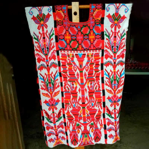
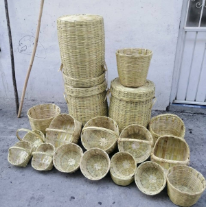
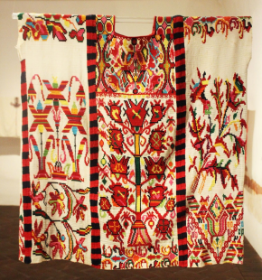
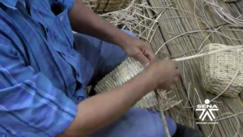
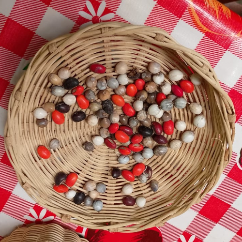
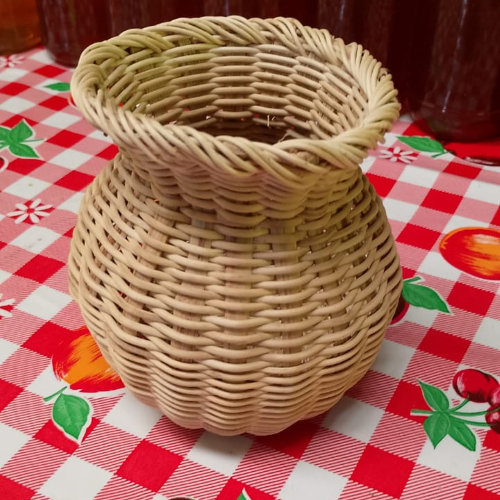

Precios
| Productos | Precios ($) |
|---|---|
| Huipil bordado a mano | $4000.00 |
| Bolsas o carteras bordado a mano | $350.00 |
| Canastos tipo florero | $500.00 |
| Collares | $200.00 |
Los canastos son elaborados artesanalmente todo esto lleva un proceso desde en buscar el bejuco. Son duraderos y lo mejor es que son duraderos lo pueden ocupar como para masetas, floreros, fruteros, para mandado y entre otras cosas.

